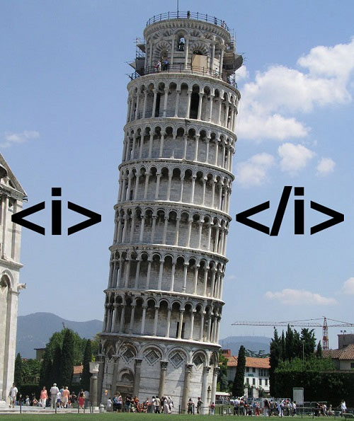
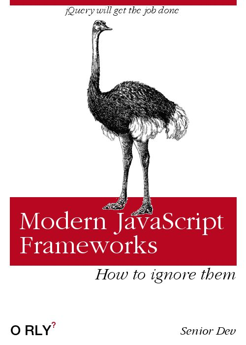

<!-- ************************* -->
#### &nbsp;
## **CSCI 571: Web Technologies**
### Dr. Saty Raghavachary, Associate Professor, CS Dept.
<div style="height:1px;border:1px solid #BBBBBB;"/>
###Course pages: https://bytes.usc.edu/cs571/m25_TheWeb-bu. FYI, this entire site is created using Markdown (opposite of 'markup'), so the pages should come up nicely (on account of "responsive web design") on every device. Also, the look of the site will change periodically, fyi.. We'll use this site for lecture notes, hw publishing (and "extras").
###Brightspace/D2L: https://brightspace.usc.edu/d2l/home/211422. You will submit your homeworks through here, and will access your scores here as well, AND your final letter grade. Note: we're not going to use Blackboard for anything course-related (no HWs, lecture content will be posted there).
###Piazza: https://piazza.com/usc/summer2025/csci571. This is a 'discussion' site, for you to post questions related to HWs and lecture material, and post related answers/comments. Instead of mailing me or the TAs or the CPs/graders, it's oftentimes better to post a note on Piazza instead, on account of more 'eyeballs' being able to look at them, and us not having to answer same/similar questions repeatedly.
<div style="height:1px;border:1px solid #BBBBBB;"/>
<!-- ********************************************************************************************** -->
<br>
<br>
<div style="height:1px;border:1px solid #BBBBBB;"/>
<!----------------------------------------------------------------------------------------->
<!-- ********************************************************************************************** -->
----
##**Our course**
###Blurb
####Official course listing - here is the <a target="_blank" href="https://classes.usc.edu/term/20252/catalogue/school/ENGV/program/CSCI">course catalog</a> - look for 'CSCI 571 - Web Technologies'.
###Overview
####This course is about the 'web' - it will help you understand how it works, and also teach you how to write software (both 'front end' and 'back end') that runs on it.
####We will start at the foundational level, and cover the basics of HTTP, web servers, clients, etc. We will then progress to discussing responsive web design (for mobile devices), programming frameworks, server-side programming etc. We will finish, with discussions related to modern practices and infrastructure - languages, APIs, serverless applications, microservices, web3, etc. We will finish by looking at bleeding-edge technologies that can help build web apps and more, eg. GenAI.
####In addition to regular lecture and discussions, you will also be provided, ongoing, with 'extra' material that can help you make connections between course material and the real world (eg. the 'G-MAFIA + BAT' group of 'Big Nine' companies, and many others).
####Bottom line: we will look at a TON of things related to the web - current, relevant, practical, **fun**!!
###Pre-requisites
####You DO need to know coding, period! The assignments are all code-related, and the lecture material will include code samples and code-oriented demos throughout. Specifically, the languages you'll be programming in, are
####• JavaScript
####• Python
####• Dart (to output to Android/iOS/web/Windows/MacOS/Linux!)
####We'll cover the basics of these languages, esp. JavaScript and Python. That said, prior knowledge of them will be quite helpful for you.
----
##**People**
###Professor
####Dr. Saty Raghavachary
####I work in, teach, write about, lecture, consult, code and do informal research on computer graphics (CG), data science/ML, and <a href="https://link.springer.com/chapter/10.1007/978-3-030-93758-4_20">'AGI'.</a> [Here](http://www.viterbi.usc.edu/academics/faculty/faculty-directory/profile.php?faculty=raghavachary_saty.xml) is my brief bio.
####&bull; office hours [in/near GCS 302D]: by appt.
####&bull; email: saty@usc.edu, satychary@gmail.com (I'm also on Facebook, Linkedin and Twitter) - several ways to be in touch!
###TAs:
####&bull; Dipsy Desai: deepakde@usc.edu
####&bull; Syeda Tasnim Fabiha: fabiha@usc.edu [Co-Lead]
####&bull; Sandeep Zechariah George Kollannur: kollannu@usc.edu
####&bull; Shefali Tushar Kulkarni: shefalit@usc.edu [Co-Lead]
####&bull; Tuan Ngo: tkngo@usc.edu
####&bull; Yuehan Qin: yuehanqi@usc.edu
####&bull; Pengda Xiang: pxiang@usc.edu
####&bull; Xinyi Yu: xyu07104@usc.edu
###CPs:
####&bull; TBA [maybe 0!!!!]
####**In addition to communicating with me, do make it a point to get to know your TAs+CPs+grader!** They are all quite knowledgeable and can help you.. Please get in touch with them, to make a f2f/Zoom (etc) appointment.
----
##**Policies**
###No talking!
####BE MINDFUL (AWARE) of others, who have paid a LOT of money (like you have, too), and come to the lecture to listen to ME, not YOU. It's disrespectful, gross, childish, indecent... to talk, when the lecture is in progress. PLEASE BE QUIET.
###Attendance
####Attendance is mandatory, for in-class as well as online (excluding DEN) students. Since it's impractical to do a full 'roll call', I will use https://bytes.usc.edu/~saty/tools/xem/run.html?x=att-m25_5_7_1 to pick out names (email addresses, actually) at random - if your name comes up, and if you don't respond right away, **you will lose 5 points (off your cumulative total for the course)** EACH time this happens. If you have a valid+pre-approved reason to be out/away, you most certainly can, it's not a heartless, zero-exceptions policy!
###Statement for students with disabilities
####Any student requesting academic accommodations based on a disability is required to register with Disability Services and Programs (DSP) each semester. A letter of verification for approved accommodations can be obtained from DSP. **Please be sure the letter is delivered to me as early in the semester as possible.** DSP is located in STU 301 and is open 8:30 a.m. - 5:00 p.m., Monday through Friday. The phone number for DSP is (213) 740-0776.
###Statement on academic integrity
####USC seeks to maintain an optimal learning environment. General principles of academic honesty include the concept of respect for the intellectual property of others, the expectation that individual work will be submitted unless otherwise allowed by an instructor, and the obligations both to protect one's own academic work from misuse by others as well as to avoid using another's work as one's own. All students are expected to understand and abide by these principles.
####Scampus, the Student Guidebook, contains the Student Conduct Code and also the recommended sanctions for violating academic integrity. The PDF is <a href="https://studentaffairs.usc.edu/files/2015/11/SCampus-Final-112015_v8.pdf" target="_blank">here</a>.
####Students will be referred to the Office of Student Judicial Affairs and Community Standards (SJACS) for further review, should there be any suspicion of academic dishonesty. The Review process can be found <a target="_blank" href="https://sjacs.usc.edu/">here</a>.
####Copying (and then modification) of any portion of code from Internet sources or fellow students is prohibited unless cleared with the instructor. In addition, working together on a programming assignment is also a gray area. If your code resembles that of your friend's too closely, that will be considered a VIOLATION.
####Here is my policy: if I come to find out that your submission resembles another submission (from a fellow student in your section or another section, a roommate's submission from an earlier class, submission from someone else who took the class earlier, code found on GitHub etc..), **I WILL REPORT YOU TO SJACS, AND GIVE YOU A 0 FOR YOUR SUBMISSION**. You can then deal with SJACS to convince them if you need to, that you did not cheat. Please take this **very seriously**, and BELIEVE it - if you decide to flout the rules, you do so at your own risk.
####Translation/bottom line: **DO NOT CHEAT under ANY circumstance(s)!!**
###Emergency preparedness/course continuity in a crisis
####In case of a declared emergency if travel to campus is not feasible, USC executive leadership will announce an electronic way for instructors to teach students in their residence halls or homes using a combination of our course site, D2L, teleconferencing, and other technologies. LIKEWISE, on account of COVID-19!
<!-- ********************************** -->